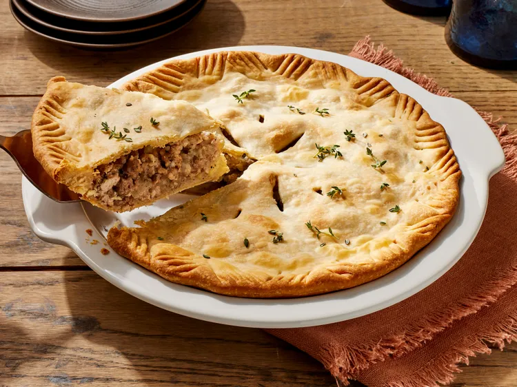

Return to Homepage
Meat Pie

Photo source: Original source
Description
Meat Pie is a savory baked dish featuring a flavorful, well-seasoned meat filling enclosed in a golden, flaky pastry crust. It has a tender, hearty filling and a crisp outer layer, making it a satisfying comfort food that can be enjoyed as a main dish or a savory snack.
| Preparation Time |
15 mins |
| Cook Time |
30 mins |
| Total Time |
45 mins |
| Servings |
12 |
Ingredients
- 1 medium potato, peeled and cubed
- ½ pound ground beef
- ½ pound ground pork
- ½ cup chopped onion
- ⅓ clove garlic, chopped
- ½ teaspoon mustard powder
- ½ teaspoon dried thyme
- ¼ teaspoon dried sage
- ¼ teaspoon ground cloves
- 1 teaspoon salt
- ¼ teaspoon ground black pepper
- ¼ cup water
- 1 (15 ounce) package refrigerated pie crusts
Directions
- Gather all ingredients. Preheat the oven to 425 degrees F (220 degrees C).
- Place potato in a saucepan with enough water to cover. Bring to a boil, and cook until tender, about 5 minutes.
- Drain, mash, and set aside.
- Meanwhile, crumble ground beef and pork into a large saucepan. Add onion, garlic, mustard powder, thyme, sage, cloves, salt, and black pepper. Stir in water. Cook over medium heat, stirring, until meat is evenly browned.
- Remove from the heat and mix in mashed potato.
- Ease one pie crust into a 9-inch pie plate. Fill with meat mixture, then top with the remaining pie crust.
- Trim any excess dough, then crimp the edges with the tines of a fork to seal.
- Prick top crust a few times with a knife to vent steam. Cover the edges of the crust with aluminum foil.
- Bake in the preheated oven until crust is browned, about 25 minutes.